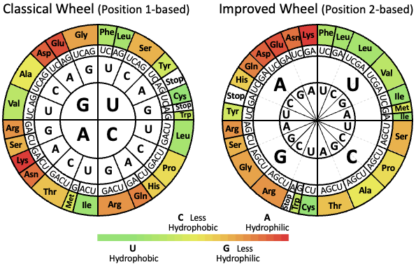
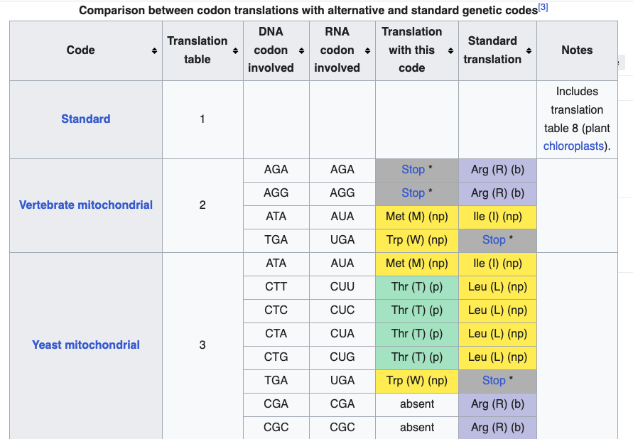

Solución Ejercicio citocromo#
Entrar a Apolo y preparar el entorno de trabajo#
Crear una carpeta “examen_sunombre” (0.25 punto)
Entrar y descargar las secuencias (0.25 punto)
conda activate biopython_env
mkdir examen_laura
cd examen_laura
wget https://raw.githubusercontent.com/lauraalazar/BiologiaComputacional/main/CytBProt.txt
wget https://raw.githubusercontent.com/lauraalazar/BiologiaComputacional/main/CytBDNA.txt
wget https://raw.githubusercontent.com/lauraalazar/BiologiaComputacional/refs/heads/main/IL2RA.txt
Exploración secuencias de Citocromo B#
Escribir un script en python para:
a. Imprimir el ID y la longitud de los genes (0.5 punto)
b. Extraer la secuencia de perro Canis familiaris (0.5 punto)
c. Utilizando la función
translate()traducir la secuencia de DNA (ej canis_seq.translate(to_stop=True)) (1 punto)d. Ejecute el script de python dentro de un script slurm (0.5)
Examine la secuencia para perro en el archivo CytBProt.txt ¿Encuentra diferencias entre las secuencias? Use el método de la sección 3.8 del tutorial de Biopython https://biopython.org/DIST/docs/tutorial/Tutorial-1.83.html para ajustar el punto anterior y explicar la necesidad de este ajuste (1 punto)
#!/usr/local/bin/
# Script por Laura Salazar Jaramillo
# Compara secuencias de DNA y proteina de Citocromo B
from Bio import SeqIO
from Bio.Seq import Seq
from Bio.SeqRecord import SeqRecord
# Definir el archivo de entrada
dna_file = "CytBDNA.txt"
prot_file = "CytBProt.txt"
# Iterar sobre cada secuencia de ADN
for record in SeqIO.parse(dna_file, "fasta"):
dna_seq = record.seq # Obtener la secuencia de ADN
print(record.id,len(dna_seq)) #Imprimir id y longitud de la secuencia
if record.id=="Dog":
canis_seq=record
canis_seq_transl = canis_seq.translate(to_stop=True) # Traducción a proteína
print(canis_seq_transl.seq)
for record in SeqIO.parse(prot_file, "fasta"):
if record.id=="Dog":
print(record.seq)
# Ajuste de tabla de traducción]
canis_seq_transl_adj = canis_seq.seq.translate(table="Vertebrate Mitochondrial")
print(canis_seq_transl_adj)
Escribir secuencias en un archivo output con formato#
(Sección “Ejercicio con secuencias”)
#!/usr/local/bin/
# Script por Laura Salazar Jaramillo
# Compara secuencias de DNA y proteina de Citocromo B
from Bio import SeqIO
from Bio.Seq import Seq
from Bio.SeqRecord import SeqRecord
# Definir el archivo de entrada
prot_file = "CytBProt.txt"
# Extraer las secuencias de perro y humano
selected_proteins = (record for record in SeqIO.parse(prot_file, "fasta") if (record.id == "Dog" or record.id == "Human"))
SeqIO.write(selected_proteins, "CytBProt_human_dog.fa", "fasta")
Tabla de codones#

By Kpwilli - Own work, CC0, https://commons.wikimedia.org/w/index.php?curid=151066992

Comparación de CitocromoB e IRLA#
a. Copie en un archivo aparte las secuencias de humano y perro de Cicromo B y realice un alineamiento utilizando clustalw (0.5 puntos)
b. Utilice el archivo de IL2RA.txt y el programa clustalw para hacer un alineamiento entre las secuencias de humano y perro del receptor de Interleukina alpha. Describa brevemente en un editor de texto ¿Cómo es este alineamiento respecto al de Citocromo B? ¿Por qué cree que se dan las diferencias? (0.5 punto)
#!/usr/local/bin/
# Script por Laura Salazar Jaramillo
# Extrae las secuencias de perro y humano
from Bio import SeqIO
from Bio.Seq import Seq
from Bio.SeqRecord import SeqRecord
# Definir el archivo de entrada
cyt_prot_file = "CytBProt.txt"
ilra2_prot_file = "IL2RA.txt"
# Iterar sobre cada secuencia de ADN
for record in SeqIO.parse(cyt_prot_file, "fasta"):
if record.id=="Dog":
canis_record=record
else if record.id=="Human":
human_record=record
conda activate filogenia
clustalw2 -infile=IL2RA.txt -type=protein -output=phylip
Este alineamiento se puede visualizar en con la herramienta https://www.ebi.ac.uk/jdispatcher/msa/clustalo